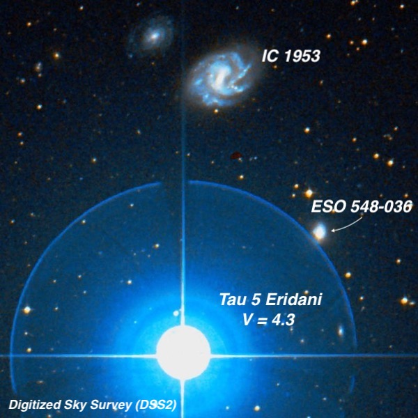
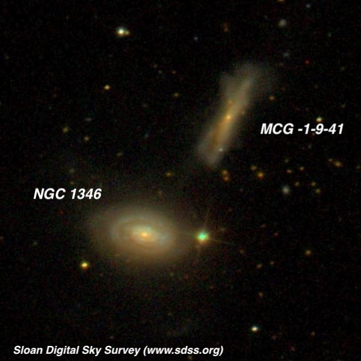
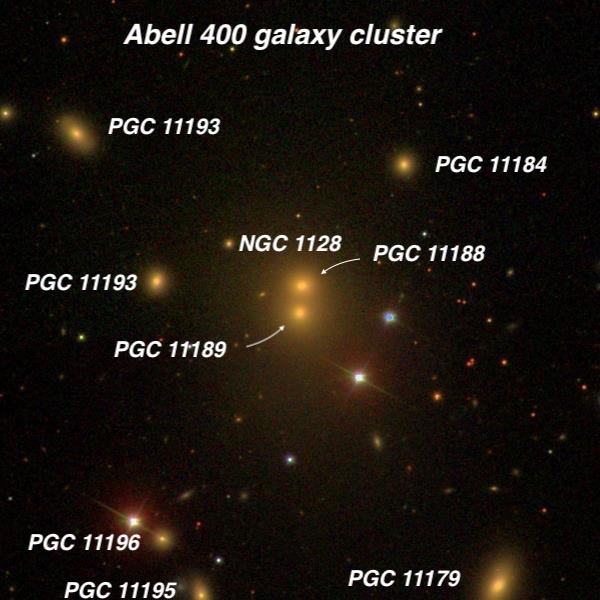
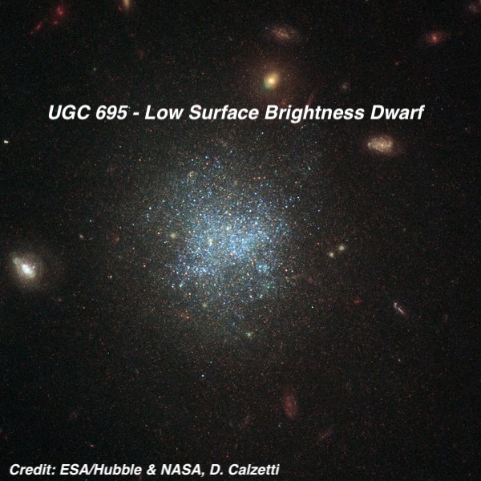
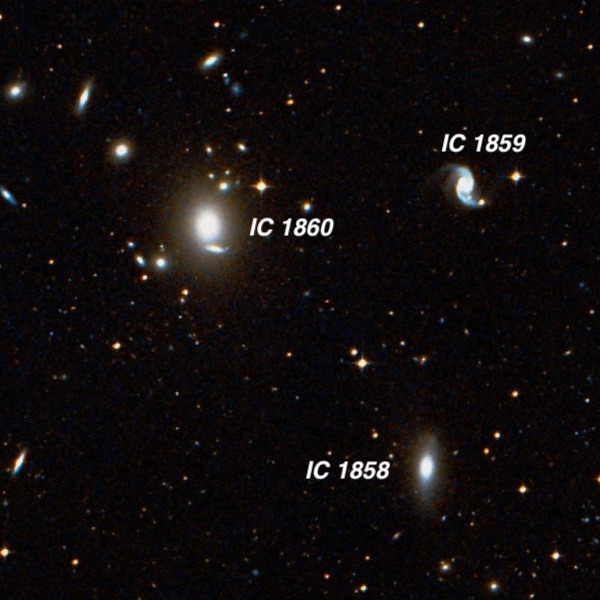
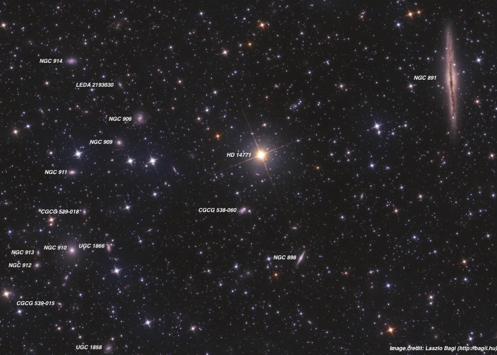

Late Fall Observing Report
I mostly hung out in Sculptor, Cetus, Pisces, Aries and Triangulum, chasing faint galaxies. But I also took a look at several King open clusters. These were discovered by Ivan King on prints taken with Harvard's 16-inch Metcalf and 24-inch Bruce astrographs, while a graduate student at Harvard. His first paper in 1949 included 21 clusters and two subsequent papers added 6 more. Of these 27 King clusters, 22 are original discoveries. The two best I looked at were King 18 in Cepheus — "Using 322x, a total of 50-60 stars were resolved with many of the stars arranged in a stick figure that seemed to be leaping through the air with stretched out arms! — and King 5 in Perseus. The latter was an attractive, rich cluster with nearly three dozen resolved stars at 322x.
On Saturday night (Nov. 23) I returned to Lake Sonoma and met Dennis Beckley. Except for a couple of guys from Santa Rosa who left around 10:00, we had the large lot entirely to ourselves. This night was completely dry, with no wind, good seeing and very good transparency. SQM readings were a tenth better than Thursday, averaging 21.45. I spent about an exhausting hour and a half focusing on a small 1° field just ½° southeast of NGC 891 in Andromeda. That’s where you’ll find Abell 347 (image at end), with members ranging from 13th magnitude down to 16th. In the end I marked up a chart with scribbled notes on nearly two dozen galaxies. Besides this galaxy cluster, the rest of the evening was mostly spent in Eridanus and Fornax, including a quick peak at the Fornax Galaxy Cluster at -35° declination.
Here’s a sampler from the two nights.
Steve Gottlieb

At 12th magnitude, you might assume IC 1953 is bright enough to be found in the sweeps of William and John Herschel. In fact on the night of December 19th 1799, William swept up NGC 1325 , which is located 9 minutes of time (RA) directly west. Out of curiosity, I checked his observing log (dictated to Caroline) and 9 minutes after discovering NGC 1325 he did record Tau 5 Eridani (19 Eri) passing through the center of his eyepiece field, but likely due to the bright star he missed the spiral galaxy IC 1953 just 9’ to its north. This galaxy was finally discovered in 1899 on photographic plates taken by Harvard Observatory at their Arequipa station in Peru.
I first observed this galaxy in 1986 with my 13.1” Odyssey I, so after 33 years I figured it was worth another look! At 375x IC 1953 was quite easy, slightly elongated, 1.5'-2' diameter, with a small brighter core that seemed offset north of the center. At times a brighter "spine" or central bar was visible extending in a N-S orientation. The surface brightness was fairly low and irregular with a patchy appearance - like you might expect for a face on spiral. It helped to place the star outside the field - a 4th magnitude star is damn bright in my scope! ESO 548-036 , 6.1' SSW, was also easily seen, extended 5:2 ~N-S, ~40"x16", with a small bright core. This galaxy is just outside the glare of the star, only 6’ to its SE!

NGC 1346 + MCG -01-09-041 03 30 13.3 -05 32 36; Eridanus V = 13.1; Size 1.2'x0.8'; PA = 80°
This interacting pair is only 1.6’ apart and it also resides in Eridanus. NGC 1346 was discovered by Édouard Stephan, of Stephan’s Quintet fame, in December of 1876. As director of the Marseilles Observatory, he was using their excellent 31” silvered glass reflector built by Focault (of the knife-edge test), perhaps the first great reflector mounted equatorially in an observatory.
I called NGC 1346 fairly faint, oval WSW-ENE, ~0.6'x0.45', with an obvious very small brighter core. The galaxy forms an interacting pair with MCG -01-09-041 only 1.6' NW. The companion was quite dim due to its very low surface brightness. With averted it was quite elongated NNW-SSE, ~50”x20”. Why didn’t Stephan notice it? Certainly having advance knowledge made it much easier for me!

NGC 1128 = PGC 11188 + 11189 02 57 41.6 +06 01 28; Cetus V = 12.7; Size 0.9'x0.4'; Surf Br = 11.7
This merged "dumbbell" galaxy is associated with the radio source 3C 75 and each component exhibits a twin radio jet! It’s the brightest member of a rich cluster — Abell 400 — at a distance of 300 million l.y. in the direction of Cetus. Famed comet hunter Lewis Swift discovered this system in 1886 with the 16-inch refractor at his Warner Observatory in Rochester, New York. He made no mention of the galaxy being double, though noted "2 pretty faint stars close [west].” Swift’s position was very poor, so the identification is not certain. Interestingly, William Herschel might have been the first to observe it. In September 1786, he recorded "Some small stars with suspected nebulosity, probably a deception.” He never went back to verify the object but his position is an exact match!
At 375x, this object was easily resolved with the two nuclei separated by 16" N-S. The northern nucleus was noticeably brighter and well defined, ~12" diameter. The southern nucleus had a lower surface brightness and faded out more gradually into a common halo. A mag 12.5 star is 1’ SW and a mag 13.5 star 1’ W. The additional labeled PGCs are much fainter cluster members visible in the same field.

UGC 695 01 07 46.4 +01 03 49; Cetus V = 14.9; Size 0.8'x0.7'; PA = 150°
This Hubble image was released a couple of months ago, and I immediately added this galaxy to my observing list. It’s an isolated dwarf, relatively nearby at ~30 million light years and resolved into thousands of stars by the HST. The accompanying text for the image reads "UGC 695 is a low-surface-brightness (LSB) galaxy. These galaxies are so faint that their brightness is less than the background brightness of Earth’s atmosphere, which makes them tricky to observe. This low brightness is the result of the relatively small number of stars within them — most of the baryonic matter in these galaxies exists in the form of huge clouds of gas and dust. The stars are also distributed over a relatively large area.”
Due to its low surface brightness, visually it was just a dim roundish patch with averted, perhaps 25” in diameter and no noticeable core or nucleus.

These three galaxies are the brightest member of the cluster ACO S301, which resides at a distance of 300 million l.y. in the constellation of Fornax. The data above applies to IC 1860, the brightest of the trio. There are lots of fainter cluster members nearby, but due to the low elevation (-31.2° declination), I only managed two other galaxies. The three ICs were not difficult, but didn't show much detail other than elongation and slightly brighter cores. I’ve viewed them a few previous times, because of their location — 1° southeast of NGC 1097 , a gorgeous photogenic spiral. I didn’t take notes this time on NGC 1097, but here’s how it appeared in a 30” from Australia, with the galaxy nearly at the zenith.
At 303x; this showpiece barred spiral (https://apod.nasa.gov/apod/ap150109.html) contained a bright central bar ~4.5’ x 1.5' NW-SE. The bar was sharply concentrated with an extremely bright, slightly elongated core, but no distinct stellar nucleus. A prominent spiral arm was attached on the northwest end of the bar. The arm was relatively thin, well defined and knotty as it curled counterclockwise to the east, dimming out gradually about 3' ENE of center. A large bright knot was close to the northwest end of the bar, just inside the beginning of the arm and close east of a superimposed mag 14.5 star. Roughly halfway along its length was a pair of fairly prominent HII knots. The arm then fades as it passes just south of a mag 15 star. At the southeast end of the bar a delicate, thin spiral arm unfurled counterclockwise towards the northwest. About halfway along its length a slightly brighter elongated patch extended ~30" in length. The arm dimmed out ~ 3' WSW of center.

This rich galaxy cluster is located just 45’ southeast of the large dust-lane edge-on NGC 891! At 250 million l.y., the cluster lies about 8 times as distant as NGC 891. It contains 10 NGCs in a 45’ circle (mostly discovered by Stephan) and I doubled that number by picking up the fainter objects (several shown on this image which covers only part of the cluster).
The brightest member is NGC 910 , which I logged as "fairly bright, relatively large, round, 1.0'-1.2' diameter, strong concentration with a very bright core that increased to an intense nucleus. The halo has a low surface brightness and faded out at the periphery, making it difficult to gauge the exact size.” This galaxy should be visible in a 8” from a dark site.
The second brightest member is probably NGC 911 , which I called "moderately bright, fairly small, elongated 2:1 WNW-ESE, 40"x20", contains a bright core that increased to a stellar nucleus.” Although most of the members are ellipticals, an exception is NGC 898 . It appeared as a "very pretty edge-on ~6:1 N-S, ~1.2'x0.2'. Sharply concentrated with a very small bright nucleus.” This galaxy seems to float in a rich star field including a group of 4 mag 11-13 stars forming a near rhombus ~3’ SE.